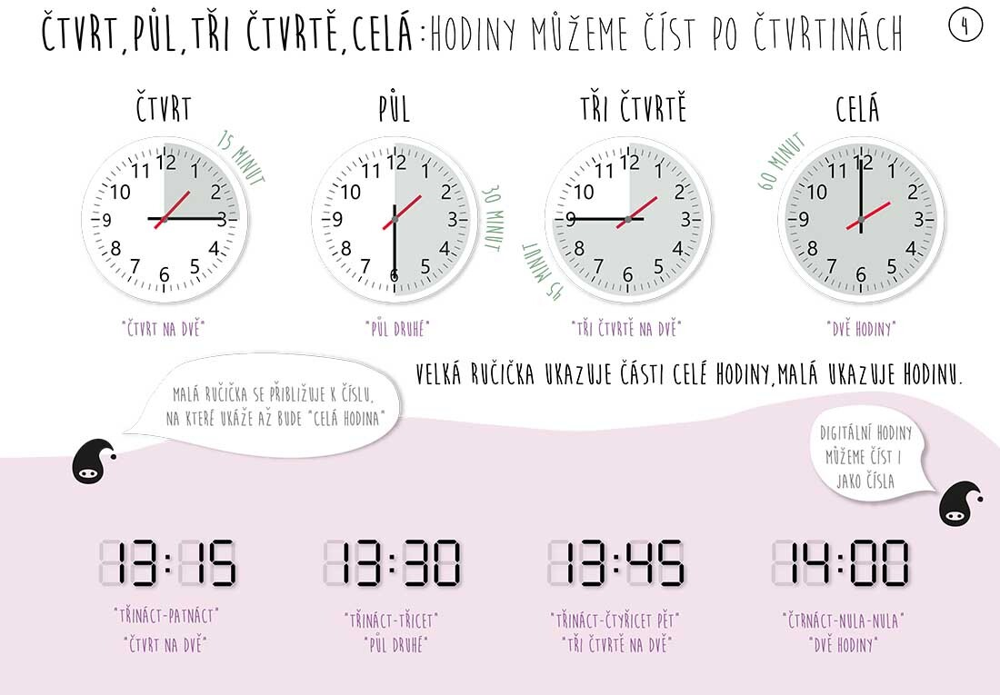
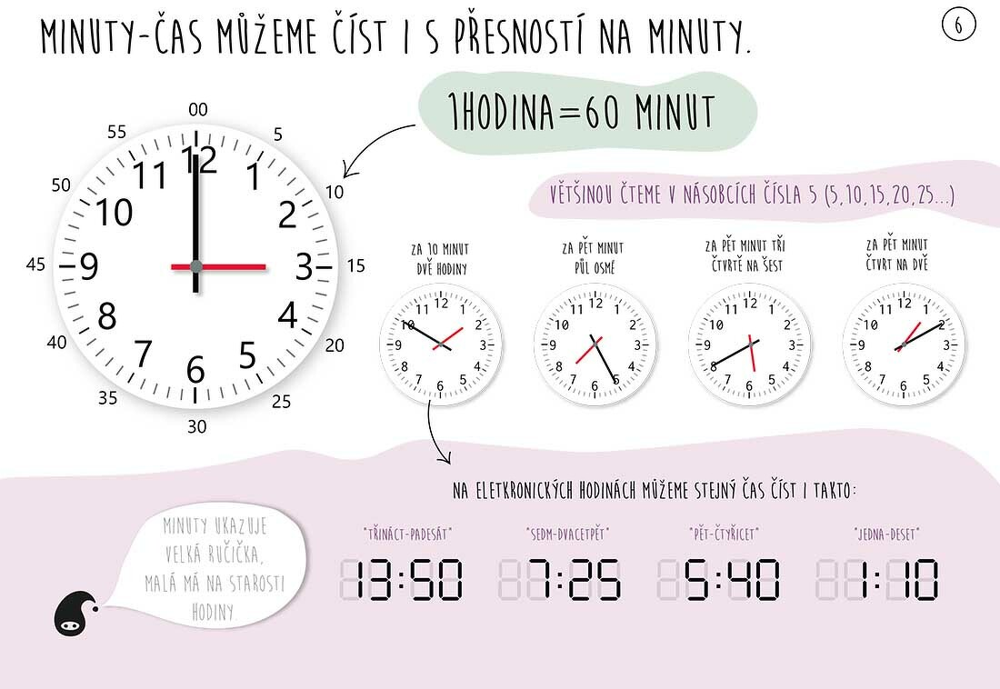
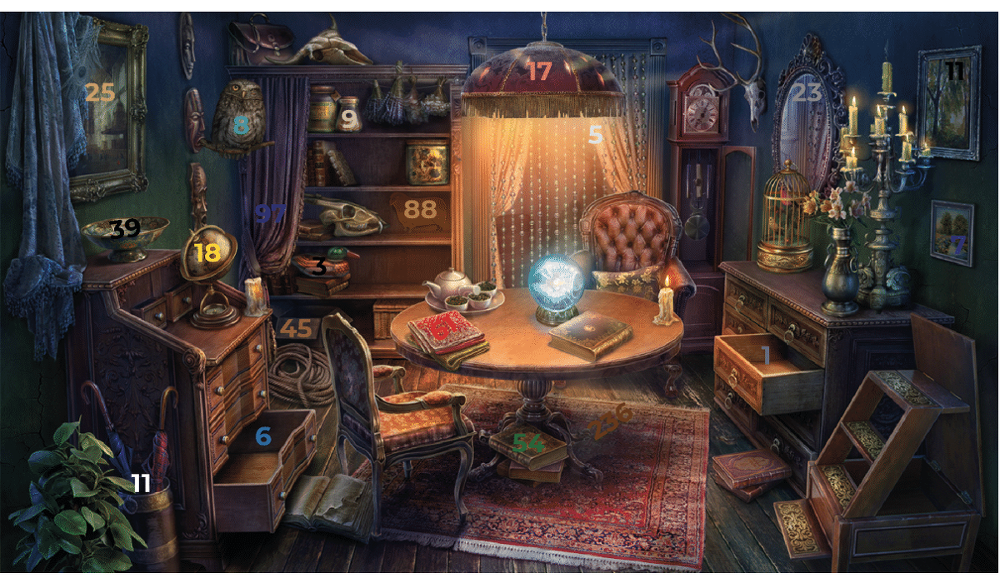
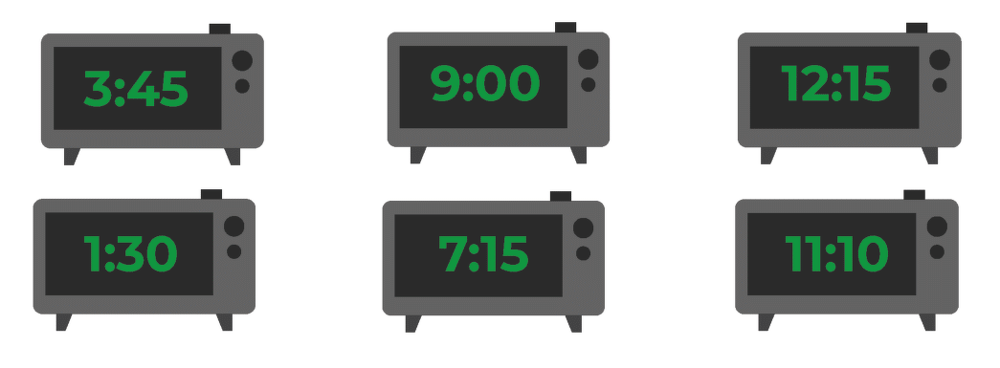

Čísla. Kolik je hodin?
Numbers. What time is it?
Dnes budeme mluvit o hodinách a číslovkách.
Well, let's get started! Download the file - Číslovky
Let's watch the video first:
VIDEO
VIDEO
0 - nula - zero
1 - jeden / jedna / jedno - yeden / yedna / yedno
2 - dva / dvě / dvě - .. / .. / dvye
3 - tři - trshi
4 - čtyři - chtyrzhi
5 - pět - pyet
6 - šest - shest
7 - sedm - sedum
8 - osm - osum
9 - devět - devyet
10 - deset - deset
11 - jedeNÁCT - yedenaatst
12 - dvaNÁCT - dvanaatst
13 - třiNÁCT - trzhinaasts
14 - čtrNÁCT - chtrnaatst
15 - patNÁCT - patnaatst
16 - šestNÁCT - shestnaatst
17 - sedmNÁCT - sedumnaatst
18 - osmNÁCT - osumnaatst
19 - devateNÁCT - devatenaact
REMEMBER!
Patnáct - we do not pronounce it as patnácEt - patnatsEt (NOT CORRECT). Since patnatsEt = patnáct set (Translation: 1,500)
TENS
20 - dvaCET - dvatset
30 – třiCET – trshitaet
40 - čtyřiCET
50 - paDESÁT - padesaat
60 - šeDESÁT - shedesaat
70 - sedmDESÁT - sedumdesaat
80 - osmDESÁT - osumdesaat
90 - devaDESÁT - devadesaat
HUNDREDS
100 - sto - one hundred
200 - dvě STĚ - dve ste
300 - tři STA - trshi sta
400 - čtyři STA - chtyrzhi sta
500 - pět SET - drinks set
600 - šest SET - shest set
700 – sedm SET – sedum set
800 – osm SET – osum set
900 - devět SET - devět set
THOUSANDS
1 000 – jeden tisíc – jeden tisic
2 000 - dva tisice - dva tisice
3 000 – tři tisíce – trshi tisice
4 000 – čtyři tisíce – chtyrzhi tisice
5,000 - pět tisíc - pyet tisiits
6 000 — šest tisíc — shest tissiits
7 000 – sedm tisíc – sedum tisiits
8 000 – osm tisíc – osum tisiits
9 000 - devět tisíc - devyet tisiits
MILLIONS
1,000,000 — jeden milion
2,000,000 – two million
3,000,000 – tři miliony
4,000,000 — čtyři miliony
5,000,000 — pět milionů
6,000,000 — šest million
7,000,000 – sedm milionů
8,000,000 – osm milionů
9,000,000 — devět milionů
BILLIONS
1 – Milarda
2, 3, 4 - Miliardy
5, 6, 7, 8, 9 — Miliard KOLIK JE HODIN?
Let's watch the video:
VIDEO
- Kolik je hodin? — kolik ye ghodin — What time is it?
ANSWERS
— je 1 hodina
— jsou 2, 3, 4 hodiny
— je 5 (more than 5) hodin
— 11:15 — je čtvrt na 12 — there is a quarter on 12
— 11:30 — je půl dvanácté — half past eleven
— 11:45 — je tři čtvrtě na 12 — there are three quarters on 12
— 11:40 — je za 5 minut tři čtvrtě na 12 - in 5 minutes there are three quarters on 12
Thanks to //www.pipasik.cz for the illustrations.

Hodiny můžeme číst po čtvrtinách - we can read the clock by quarters
Velká ručička ukazuje části celé hodiny, malá ukazuje hodinu - the large hand shows parts of the whole hour, the small hand shows the hours
Malá ručička se přibližuje k číslu, na které ukáže až bude “celá hodina” - the small hand is approaching the number that it will point to as soon as the “whole hour” is reached
Digitální hodiny můžeme číst i jako čísla - we can read electronic clocks like numbers

Můžeme číst i s přesnosti na minuty - we can read accurately and down to the minute
Většinou čteme v násobcích čísla 5 - we mainly read numbers that are multiples of 5
Na elektronických hodinách můžeme stejný čas číst i takto - on an electronic clock we can read the same time and so
Minuty ukazuje velká ručička - minutes are shown by a large hand
Malá má na starosti hodiny - the little one is in charge of the clock. (Mít na starosti - “to have concern about something”)
Remember to use the verb být in the correct form
Kolik je hodin?
Je jedna hodina
Jsou dvě, tři, čtyři hodiny
Je pět hodin
Je šest hodin
Je sedm hodin
Je osm hodin
Je devět hodin
Je deset hodin
Je jedenáct hodin
Je dvanáct hodin
8:15 — Je čtvrt na devět
8:30 — Je půl deváté
8:45 — Je tři čtvrtě na devět
8:01 - Je osm hodin, jedna minuta 8:02, 8:03, 8:04 - Je osm hodin dvě, tři, čtyři minuty
8:05 — Je osm hodin, pět minut
8:50 — Je za deset minut devět
8:55 — Je za pět minut devět
8:59 — Je za (jednu) minut devět
1) Čas jsou peníze - Chas sou peneeze - Time is money
2) Musíte šetřit čas - Muceete shetrshit chas - You must save time
3) Není čas ztrácet čas - Nenee chas ztraatset chas - There is no time to waste time Practice
1. Následující čísla zapište písemně nebo arabskou číslicí.
2. Doplňte chybějící písmena u číslovek.
3. Poslechněte si následující zápis telefonních čísel a zapište je.
4. Poslechněte si audio a opakujte číslovky nahlas:
a) 8; 15; 4; 17; 3; 26; 5; 39; 7; 88; 11; 9; 44; 10; 55; 14; 67; 18; 20; 73; 94.
b) 256; 1823; 499; 4578; 2934; 367; 5649; 1999; 758; 3865; 981; 6911.
5. Doplňte vynechanou číslici v pořadí — zapište slovy.
6. Podívejte se na obrázek a vypište všechna čísla, která najdete.

7. Vypočítejte příklady, přečtěte si je česky a odpověď napište slovy.
Vzor: 5 + 5 = deset -> pět plus pět rovná se deset.
8. Podívejte se na hodiny a opravte chyby ve slovním zápisu.
Vzor: 11:15 -> je čtvrt na tři — správně: je čtvrt na dvanáct
9. Napište následující časy. Kolik je hodin?
10. Podívejte se na obrázky s digitálním časem a napište, kolik je.

Odpovězte na následující otázky.
Next unit